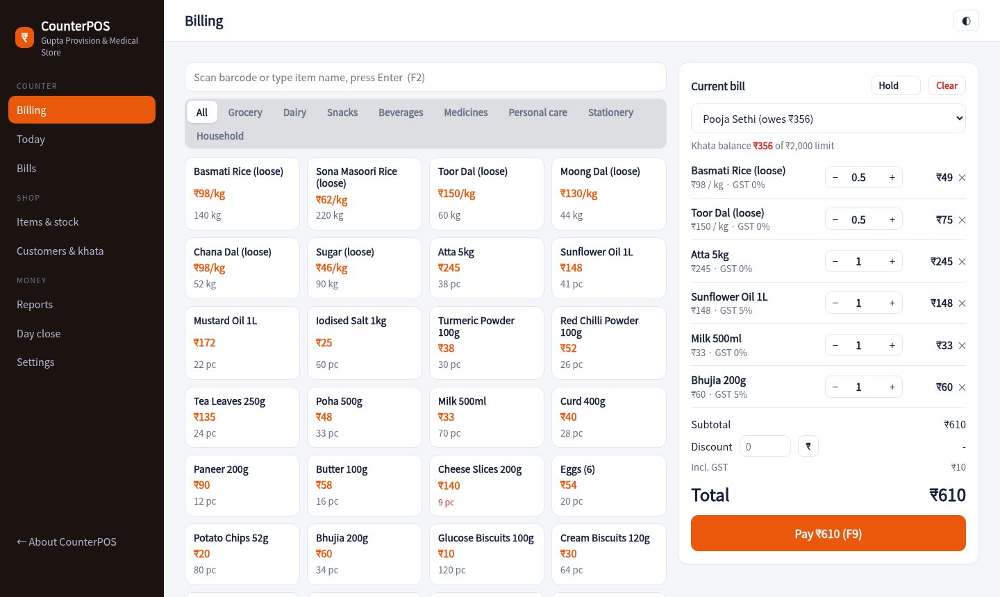
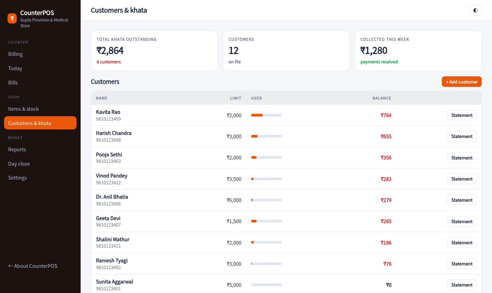
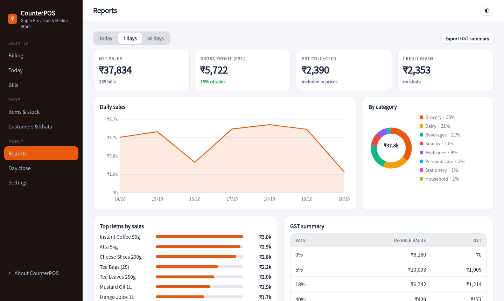

One screen for the counter. Scan or tap items, take cash, UPI or khata, print a GST receipt and see the day's numbers without opening a notebook.

Scan with any USB scanner or tap a tile. Hold a bill while a customer looks for cash, then bring it back. F2 jumps to search, F9 takes payment.
Rice, dal and sugar sell by the kilo. Type 1.25 or use the quarter-kilo buttons, and the price follows.
Prices include GST. Every bill splits taxable value and tax by slab, so your monthly GST figures are already added up.
Sell on credit with a limit per customer. See balances, print statements and send a WhatsApp reminder with a UPI link.
The pay screen shows a QR for the exact amount. Split a bill between cash and UPI when customers mix.
Take items back against a bill and get a credit note. At night, count the drawer and see if it matches.
Items on the left, the bill on the right. Quantities, discount and customer are all editable without leaving the screen.
Each customer has a limit and a running ledger. One tap opens WhatsApp with the balance and a UPI link filled in.

Sales by day, category and item, an estimated profit, and a GST table you can hand to your accountant.

Type them in or import a CSV from your old software. Set price, GST and stock once.
Scan, tap, take payment, print. The stock count drops with every sale.
Count the drawer, see the difference, and check what to reorder tomorrow.
Sample pricing for this concept build.
Yes. A USB scanner types the code into the search box and presses Enter, which adds the item. No driver is needed.
The receipt prints through the browser at 58 or 80 mm width. Any thermal printer that your computer can print to will work.
Prices are entered with GST included. The bill and reports split taxable value and tax for each slab.
No. It is generated in your browser for a made-up store and never leaves your device.
Add a few items to a bill, pay by UPI, then look at today's numbers.
Start billing